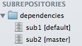
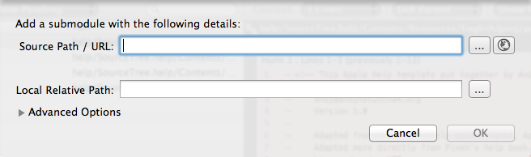
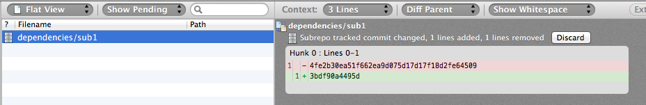
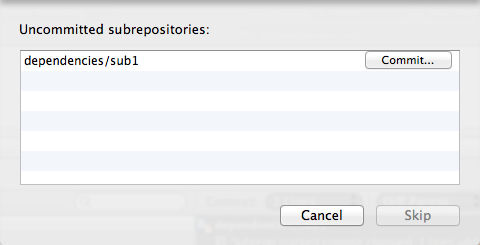

Submodules and Subrepositories
It's possible to include nested repositories inside your own repository, in order to conveniently reference other projects, such as dependencies which you're using as source. These nested repositories are referred to as submodules in Git, and subrepositories in Mercurial.
The key aspect of a submodule / subrepository is that only a reference to it is kept in your own repository; this reference consists of three things:
- The location of the nested repository within your repository (local relative path)
- The URL where the contents can be retrieved from
- The commit / revision of the nested repository which is to be used
The first two items are self-explanatory, but the third item needs a little explanation. What this means is that your parent repository is not just referencing the external project's latest version, but a very specific commit / revision number. This insulates your project from changes in the nested repository that you may not have tested with, but it also means that to update the version of the submodule / subrepository, you have to take some manual action. This is covered later.
Viewing submodules / subrepositories
Submodules / subreposiories are displayed in the sidebar like so (this example is from Mercurial):

The submodules are displayed in a tree which represents their location within your repository. The branch which is checked out is displayed between square brackets, and there may also be other markers; an ellipsis ('...') marker if there are uncommitted changes within the submodule / subproject, and up/down arrows if there are commits waiting to be pushed or pulled.
To open the full detail of the submodule / subrepository, double-click on the sidebar entry. However note that committing and pushing can be done from the parent if needed (covered later).
Creating a submodule / subrepository
To create a new submodule or subrepository in a repository, use the Repository > Add Submodule... option from the main menu, or right-click on the sidebar and select the same option. You will then be presented with the following dialog:

Source Path / URL:This is the URL where the nested repository will be cloned from. This URL must be available to all people who are cloning your parent repository.
Local Relative Path:This is where to store the nested repository within your own repository.
When you click 'OK', the repository pointed at by the URL will be cloned into the local path and an entry created for it in your parent repository. You should commit this once you are ready, perhaps after checking / adjusting the commit which you want to use in the nested repository (see below).
Changing which submodule / subrepository version you're tracking
To change which commit in the nested repository that your parent repository is tracking, simply open the submodule in its own window by double-clicking on its entry in the sidebar. Then, switch to the log view and update / checkout the nested repository at the commit you want to track.
Next, return to the parent, and you will see an entry in the File Status view which reflects this change:

In order to propagate this change, you simply need to commit it, and push it in the normal way. In git, you may also need to stage the change before committing if that's the workflow you use.
Committing & pushing submodule / subrepository changes
Because your parent repository is dependent on the submodules / subrepositories, you usually want to keep any changes in the nested repositories committed and pushed to their respective remotes before you commit / push the parent repository. Indeed, Mercurial requires that you do this; it's not possible to commit to the parent while there are outstanding uncommitted changes on a subrepository, and you must push changes in the subrepositories before pushing the parent. Git allows you to not do this if you'd prefer, but it's usually a good idea - otherwise you may well commit and push a change in your parent repository that is dependent on the nested project's changes and cause a problem for others.
Therefore, when committing or pushing a repository, if SourceTree detects if there are submodules / subrepositories with outstanding changes and displays a dialog similar to that shown below once you try to confirm the commit / push of the parent:

This dialog allows you to commit and/or push changes to the nested repositories before the parent. In Mercurial, the 'Skip' button is disabled because you have to resolve these before you can proceed, but in Git you can skip this step if you see fit (but be careful you don't cause a dependency issue!).
Also note that this approach lets you commit to the submodules / subrepositories using a full commit dialog, where you can provide a completely different commit message to the one you used in the parent repository, and even create multiple commits if you want for subsets of files. This is better than, for example, the command-line behaviour of Mercurial which automatically uses the parent commit message to commit subrepositories, which is almost never what you intended.
See also
The Toolbar
The Sidebar and Footer
The File Status View
The Log View
The Search View
Drafting a commit message
Repository Settings